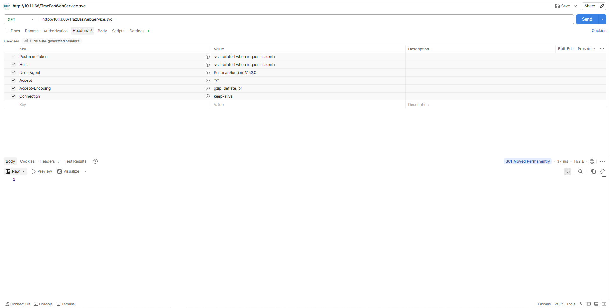
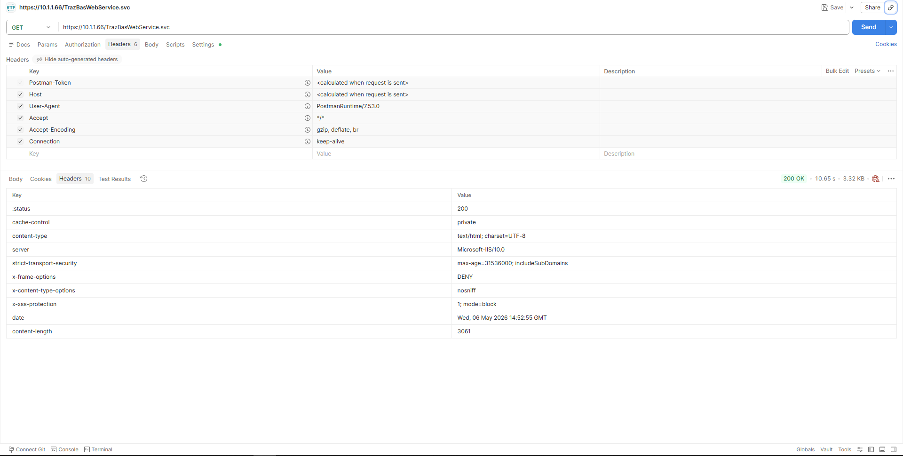
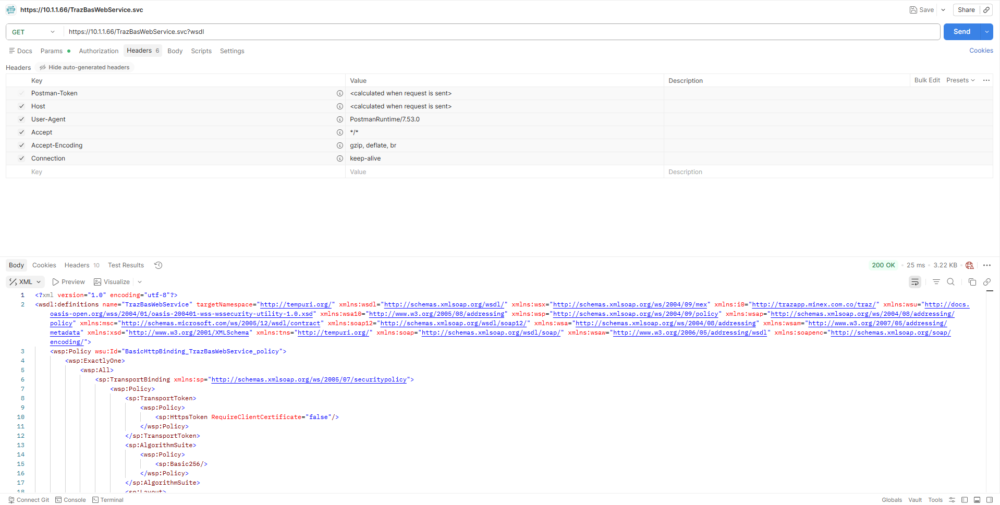
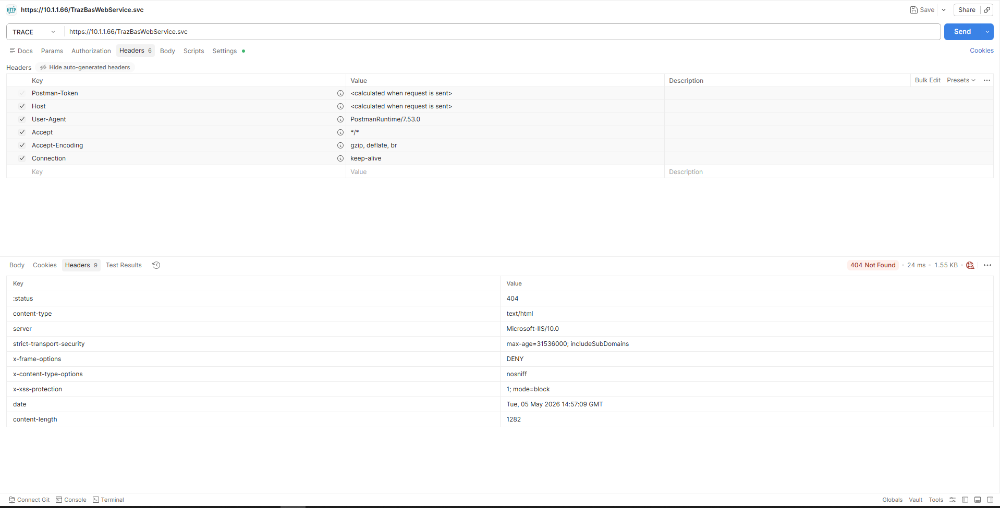

| Cabecera | Protege contra |
|---|---|
| Strict-Transport-Security | SSL Stripping / downgrade |
| X-Frame-Options | Clickjacking |
| X-Content-Type-Options | MIME Sniffing |
| X-XSS-Protection | Cross-Site Scripting |
| ID | Qué mide | Objetivo |
|---|---|---|
| M1 | Puertos HTTP expuestos | Sin exposición directa |
| M2 | Puertos HTTPS activos | ≥ 1 activo |
| M3 | Cabeceras de seguridad | 4 de 4 |
| M4 | Verbos bloqueados | TRACE bloqueado |
| M5 | Código HTTP puerto 80 | 301 redirect |
| M6 | Acceso HTTPS | 200 OK |
| M7 | WSDL por HTTP | No accesible directo |
| M8 | Vigencia certificado | > 0 días |
| ID | Métrica | Valor | ✓/✗ |
|---|---|---|---|
| M1 | Puertos HTTP expuestos | 1 (servicio directo) | ✗ |
| M2 | Puertos HTTPS activos | 0 | ✗ |
| M3 | Cabeceras de seguridad | 0 de 4 | ✗ |
| M4 | Verbos bloqueados | TRACE → 401 | ✗ |
| M5 | Código HTTP | 200 OK | ✗ |
| M6 | HTTPS disponible | No | ✗ |
| M7 | WSDL por HTTP | Sí (público) | ✗ |
| M8 | Certificado SSL | 0 días | ✗ |
| Obstáculo | Solución aplicada |
|---|---|
| URL Rewrite no instalado y sin internet | Global.asax con Application_BeginRequest |
| web.config fallaba (BOM UTF-8) | Escritura con UTF8Encoding sin BOM |
| Default Web Site ocupaba puerto 80 | Separación de sitios: redirect vs. servicio |
| Permisos de clave privada SSL | icacls para acceso a IIS_IUSRS |
| requestFiltering bloqueada en IIS | Desbloqueo via appcmd |
| ID | Métrica | Antes | Después | ✓/✗ |
|---|---|---|---|---|
| M1 | Puertos HTTP expuestos | Servicio directo | Solo redirect | ✓ |
| M2 | Puertos HTTPS activos | 0 | 1 (puerto 443) | ✓ |
| M3 | Cabeceras seguridad | 0/4 | 4/4 | ✓ |
| M4 | Verbos bloqueados | TRACE libre | TRACE 404 | ✓ |
| M5 | Código HTTP | 200 OK | 301 Redirect | ✓ |
| M6 | HTTPS disponible | No | 200 OK | ✓ |
| M7 | WSDL por HTTP | Público | Solo HTTPS | ✓ |
| M8 | Certificado SSL | 0 días | 730 días | ✓ |



